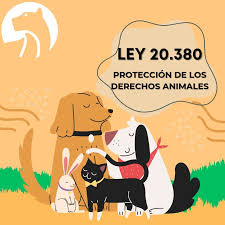
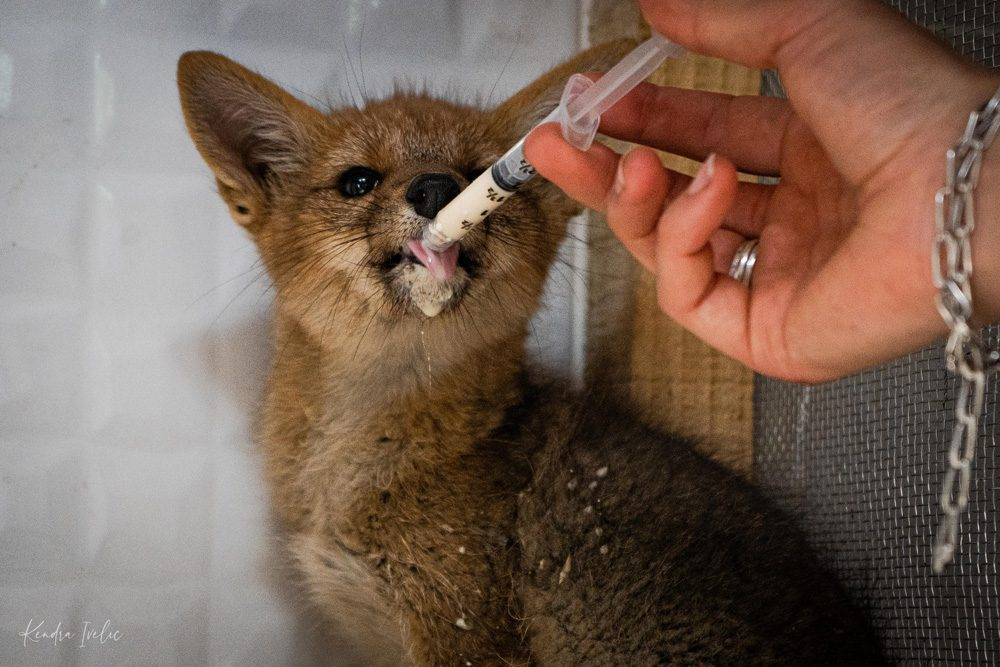
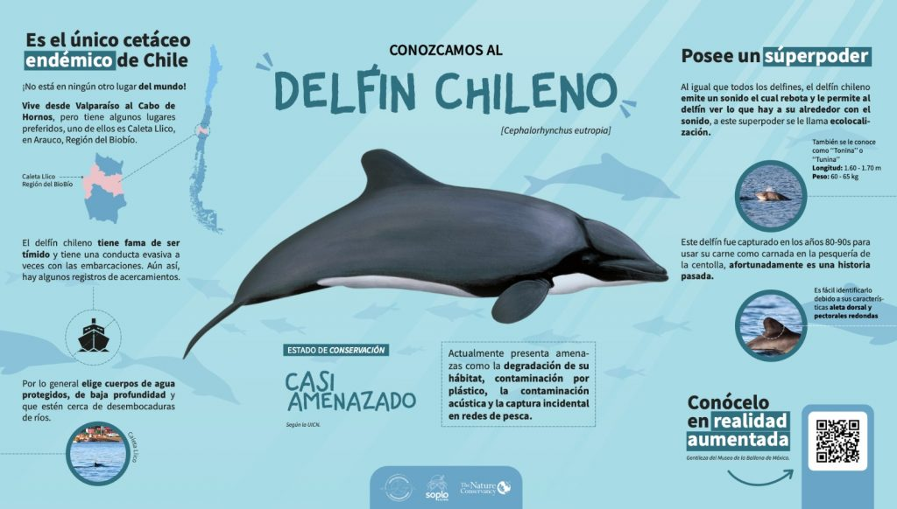
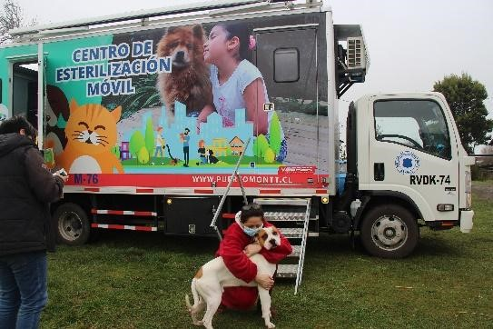
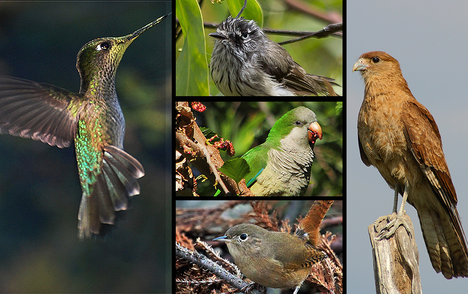

Perros responsables del 29% de la depredación de ganado en Chile
Las estadísticas recientes indican que los perros se han convertido en el principal depredador del ganado doméstico y de la fauna silvestre en nuestro país, una situación de creciente gravedad sin solución efectiva. Para hacer un diagnóstico multisectorial y abordar este problema, el Director Nacional del Servicio Agrícola y Ganadero, SAG, José Guajardo Reyes, y el Decano de la Facultad de Ciencias Veterinarias y Pecuarias de la Universidad de Chile, José Manuel Yáñez, lideraron el seminario "Perros de libre deambular: Impactos y estrategias para la convivencia responsable con la fauna y la ganadería". El objetivo fue analizar la situación actual y promover soluciones que mitiguen los daños al sector agrícola y al equilibrio ecológico nacional.
18 de Marzo, 2025

Nueva Ley de Protección Animal: Un Paso Adelante en Chile
El Senado chileno ha aprobado una histórica ley de protección animal que establece sanciones más severas para el maltrato animal y promueve la tenencia responsable. La nueva legislación incluye penas de hasta 5 años de prisión para casos graves de maltrato, multas significativas y la prohibición de tener animales por hasta 10 años para los infractores. Además, la ley establece la obligatoriedad de microchip para perros y gatos, y crea un registro nacional de mascotas. Los expertos aseguran que esta normativa marcará un antes y un después en la protección de los derechos de los animales en nuestro país. La implementación de esta ley también incluye programas de educación ciudadana sobre tenencia responsable y la creación de centros de rehabilitación para animales maltratados. Las autoridades esperan que estas medidas contribuyan significativamente a reducir los casos de maltrato animal y mejorar el bienestar de las mascotas en todo el territorio nacional.
22 de agosto, 2024
Nueva App de Monitoreo Veterinario en Tiempo Real
Una revolucionaria aplicación móvil desarrollada por veterinarios chilenos permite monitorear la salud de las mascotas en tiempo real. La app "VetCare" utiliza sensores inteligentes que se colocan en el collar de perros y gatos para registrar su actividad física, frecuencia cardíaca, temperatura corporal y patrones de sueño. Los datos se transmiten directamente al veterinario de cabecera, permitiendo una detección temprana de problemas de salud. La aplicación también incluye recordatorios para vacunas, desparasitación y citas médicas, así como un historial médico digital completo. Más de 10,000 mascotas ya están siendo monitoreadas a través de esta innovadora plataforma, que ha demostrado reducir en un 40% las visitas de emergencia al veterinario gracias a la detección preventiva de problemas de salud.
20 de Marzo, 2025

Nuevo Centro de Rehabilitación de Fauna Silvestre
El Ministerio del Medio Ambiente inauguró el primer centro de rehabilitación de fauna silvestre en la región de Valparaíso. Este moderno centro, que cuenta con tecnología de última generación, podrá atender hasta 500 animales al año, incluyendo aves rapaces, mamíferos marinos y especies terrestres. El proyecto, que tuvo una inversión de 2.5 millones de dólares, incluye áreas de cuarentena, rehabilitación y pre-liberación, además de un centro de educación ambiental para visitantes.
15 de Marzo, 2025

Descubren Nueva Especie de Delfín en Chile
Un equipo de investigadores chilenos y extranjeros ha descubierto una nueva especie de delfín en las costas del sur de Chile. El "Delfín Chileno" (Delphinus chilensis) se distingue por su patrón de coloración único y su comportamiento social particular. La investigación, publicada en la revista Nature, sugiere que esta especie podría estar en peligro debido a la actividad pesquera y el cambio climático. Los científicos están trabajando en un plan de conservación para proteger esta nueva especie.
10 de Marzo, 2025

Programa Nacional de Esterilización Móvil
El gobierno lanzó un ambicioso programa de esterilización móvil que recorrerá todo el país. La iniciativa, que cuenta con 10 unidades móviles equipadas con tecnología de última generación, tiene como objetivo esterilizar a 50,000 perros y gatos en situación de calle durante 2025. El programa incluye también microchip y registro de los animales, además de educación sobre tenencia responsable para las comunidades visitadas.
5 de Marzo, 2025

Nueva Ley de Protección de Aves Urbanas
El Congreso aprobó una nueva ley que protege a las aves urbanas y establece medidas para su conservación. La normativa incluye la instalación obligatoria de dispositivos anti-colisión en edificios de más de 10 pisos, la creación de corredores verdes urbanos y la protección de nidos durante la época reproductiva. La ley también establece multas para quienes dañen o destruyan nidos de aves protegidas.